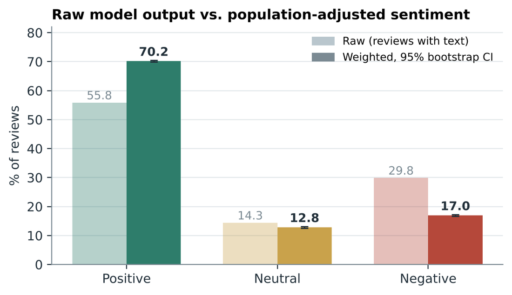

Measuring what users say: NLP on 110,000 reviews of five Bangladeshi mobile finance apps
Completed Group project, MBA at IBA, University of Dhaka, 2025 to 2026. I built the pipeline and drove the analysis; the report and slides were group deliverables.
A first pass with a sentiment model put 29.8% of 110,721 Google Play reviews (bKash,
Nagad, Rocket, Upay, TAP) in the negative class. After post-stratification weighting
the figure is 17.0%. Most of the work went into checking how far either number can
be trusted.

Raw and weighted sentiment shares, n = 110,721. The intervals reflect sampling error only, not classifier error.
Built the pipeline in Python: scraping, script detection, a two-model sentiment cascade, post-stratification weights, aspect tagging, near-duplicate detection, and difference-in-differences on 138 app releases.
The two classifiers disagree on 24.1% of English reviews but 57.2% of Bengali and 63.8% of Banglish ones, so the sentiment numbers are weakest where many local users write.
Checked the model against a 600-review hand-labelled set (66.5% accurate, from the project report) and logged the open problems, including a gold-set answer key whose IDs did not match, so I back-filled no labels.